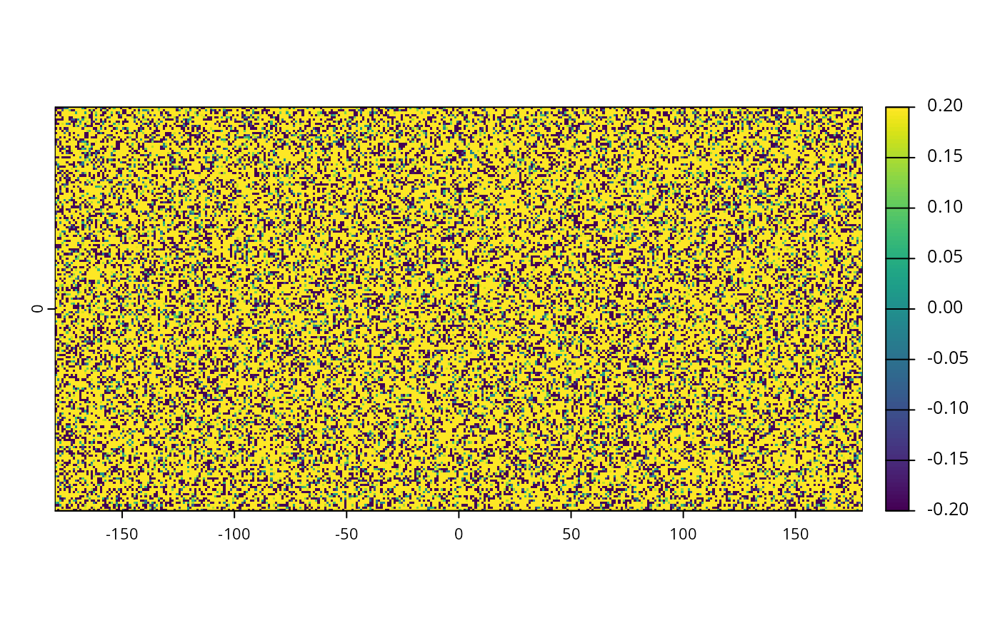
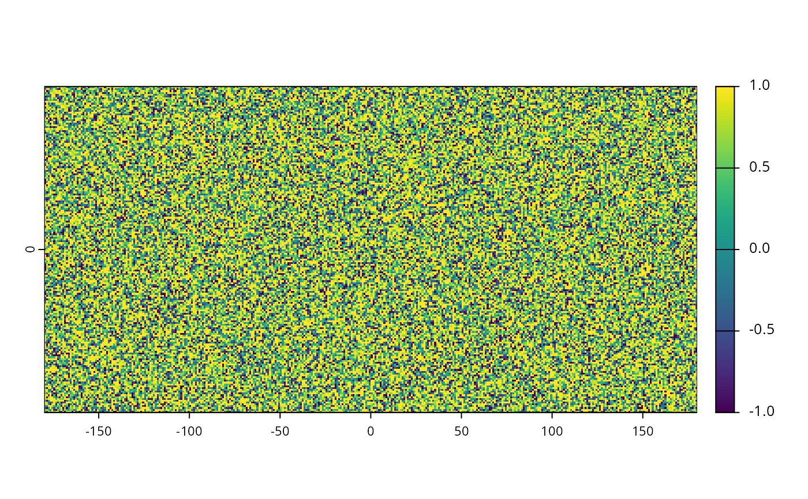
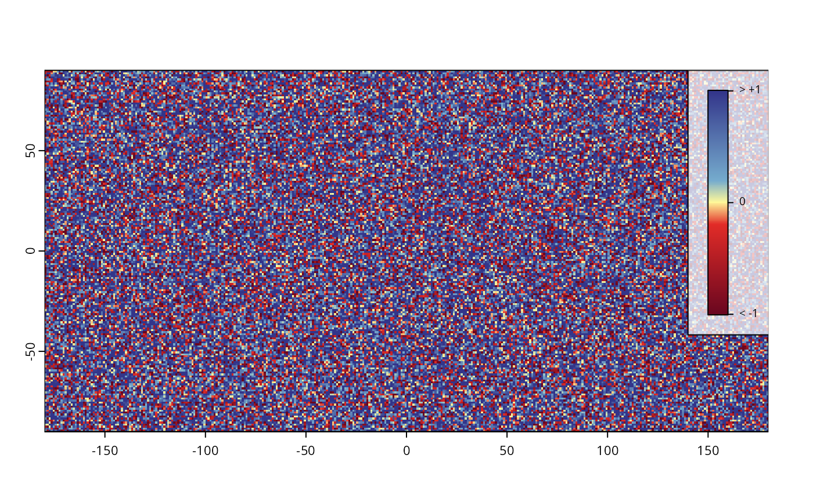

Shorthand for limiting maximum and minimum values in a SpatRaster-class object.
Arguments
- x
Object to limit, a
SpatRaster-class object.- y
Either a range (i.e. a
numericvector with two values), ordata.framewith positioned color values (columnzindicates values), or a calibrated ramp (e.g. produced withexpand).- min
If
yis not given, the minimum value to have in thedata.frame.- max
If
yis not given, the maximum value to have in thedata.frame.
Examples
# This function relies on the terra extension
if(requireNamespace("terra", quietly=TRUE)){
library(terra)
# Example 1. Using specific values
# a SpatRaster object
r<- terra::rast()
# populate with a Gaussian distribution
terra::values(r) <- rnorm(terra::ncell(r), 0.5,1 )
# and limit
rLimit <- limit(r, min=-0.2, max=0.2)
plot(rLimit)
# Example 2. Using an expanded color ramp
# Create a data.frame
df <- data.frame(
z=c(-1, -0.2, 0, 0.2, 1),
color=rev(gradinv(5))
)
ramp <- expand(df, n=200)
rLimited <- limit(r, y=ramp)
# default
plot(rLimited)
# manual ramping.
plot(rLimited, breaks=ramp$breaks, col=ramp$col,
legend=FALSE)
# temporary solution for manual legend
# Marginal ramps will be implemented later
ramplegend(x=140, y=90, ramp=ramp, cex=0.5,
at=c(-1, 0, 1), label=c("< -1", 0, "> +1"))
}


